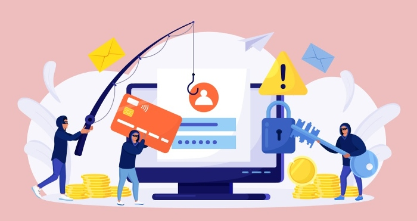
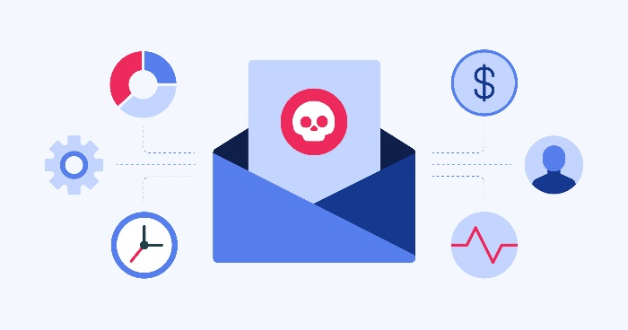

Phishing is a form of biometric entry attack that is generally used to pilfer personal secret data, including usernames and security codes. It is often used by interlopers who want to open an email, instant message, or text message that masquerades as a trusted entity. The target is then tricked into clicking on a malicious link, which can lead to the installation of malicious software, the freezing of the PC as part of a ransomware attack or the disclosure of sensitive information.
The phishing attack gets its name from the term phishing, which refers to the practice of sending emails with malicious links or attachments. These emails are created by hackers to steal your login information, and often try to persuade you to download attachments or click on links that appear to be legitimate.
Shadowing by means of an e-mail address and sending it to lots of people makes it possible for any attacker to mystery a huge number of online users by permitting considerable details and counterfeit money from them.

For one thing, they will keep the exact presentation so as to imitate communication from a spoofed organization. Including the exact same wording, general formatting, logos, and signature makes it seem genuine.
Attackers are likely to tempt you by making urgency a tactic. A prior account reminder, for example, might cause an individual to put forth less effort to verify their email identity, putting themselves at a greater risk of losing access to their personal information.
Links in messages resemble their equivalent, but are regularly misspelled or have a different domain and subdomain. Perceived similarities in the addresses give everyone the impression of a secure link, weakening recognizing the attack has begun.
Broadly speaking, spear phishing targets an individual or business, rather than a random user application that is carried out. It is a much more intricate version of phishing that requires distinct expertise of an organization, including its management hierarchy.
An attack may unfold like this.
By providing cybercriminals with valid login credentials for an account, spear Phishing is an effective method of executing the first stage of an APT.

Phishing attack protection requires steps be taken by both users and enterprises.
For users, vigilance is crucial. A spoofed message often contains subtle mistakes that expose its true identity. As an example, an email with such mistakes as spelling mistakes or a change to a domain's address would show this is legitimate. Users should also consider whether they are receiving this message manually or accessed it by mistake.
Businesses may implement numerous tools to minimize both phishing and spear phishing attacks.
In conclusion, phishing attacks are stealing sensitive information from consumers. Phishers send fake emails that appear to be from reputable companies. The email asks recipients to confirm, update or transfer personal information. The emails may also contain malicious links or attachments that may install malware.